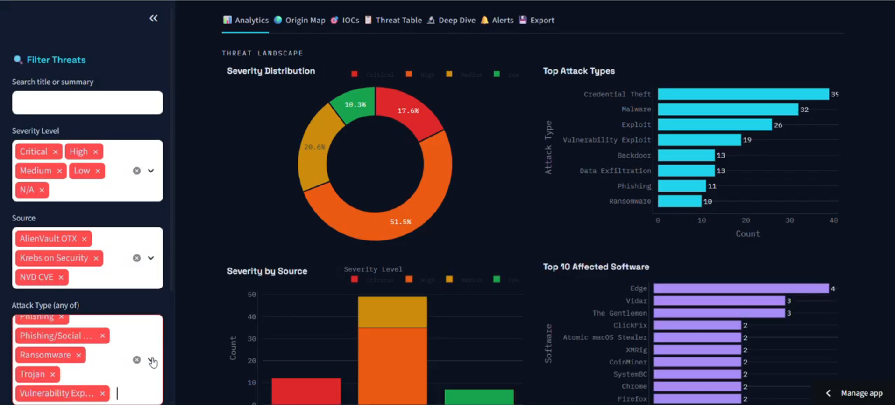

AI-Powered Threat Intelligence Dashboard
Problem
SOC analysts drown in raw threat feeds. The signal — which indicators actually matter right now — gets buried across half a dozen disconnected sources.
Approach
Built automated n8n workflows that collect and enrich threat data from AlienVault OTX, Krebs on Security, and the NVD CVE feeds — extracting and categorizing IOCs including IPs, domains, URLs, and file hashes.
Delivery
Designed a Streamlit SOC console with seven analyst views — Analytics, Origin Map, IOCs, Threat Table, Deep Dive, Alerts, and Export. Analysts filter live threats by severity, source, and attack type and work them from a priority queue.
Analytics
The landscape view breaks threats down by severity (Critical → Low), ranks the top attack types — credential theft, malware, exploits, backdoors, data exfiltration — and surfaces the most-affected software, so the highest-impact items rise to the top on their own.
Outcome
Collapses three noisy feeds into a single triage surface an analyst can act on — the difference between a data dump and a work queue.
